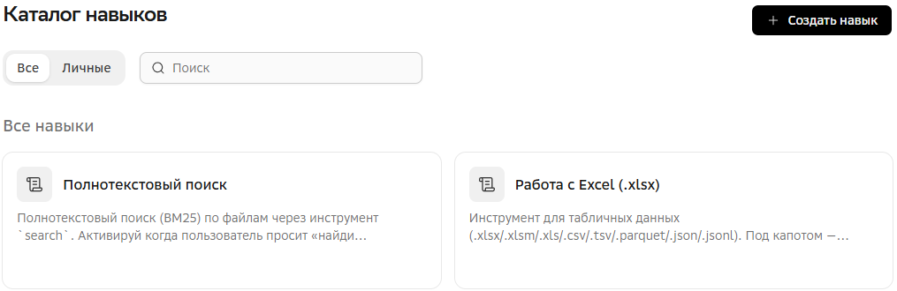

Навыки
Навыки — это инструкции для решения конкретных задач ИИ-агентами: они говорят, что делать, как отвечать, какие инструменты использовать.
В GigaCowork изначально присутствуют системные навыки, главная цель которых — вызывать инструменты для основных действий: чтение файлов Word, Excel, веб-поиск и так далее.
Вы можете создавать свои навыки для локальных повторяющихся задач: создание документов по стандартам компании, анализ данных или автоматизация работы.
Применение навыка
GigaCowork автоматически подключает нужные навыки. При этом анализируется текст из поля Условие вызова навыка: именно там описывается, в каких случаях его использовать.
Вы также можете явно указать нужный навык в тексте запроса.
Возможности навыков
-
Вызывать инструменты и другие навыки — просто укажите название.
-
Использовать коннекторы — укажите название коннектора в сценарии получения или отправки данных.
-
Выполнять Python-скрипты — добавьте текст скрипта в инструкции навыков. Поддерживаются не все возможности языка Python.
Действия с навыками
Просмотр доступных навыков

Доступные вам навыки находятся в разделе  Навыки, в основном меню.
Навыки, в основном меню.
В разделе можно найти навык по названию и отфильтровать по признаку Все и Личные (созданные вами).
Помимо личных навыков, в разделе находятся общие системные навыки.
Создание навыка
Созданные вами навыки будут видны только вам и в пространствах, куда вы их добавите.
-
В разделе
Навыки. -
В чате любой задачи.
-
Нажмите
 Создать навык, а затем Написать инструкцию навыка.
Создать навык, а затем Написать инструкцию навыка. -
Укажите:
Если у вас уже есть файл навыка, его можно импортировать, нажав в разделе Навыки Создать навык → Загрузить файл навыка.
-
Просто попросите в поле ввода создать навык и опишите, что он должен делать — система предложит создать навык и сама допишет недостающую информацию. Если вы создаете навык в чате пространства, он все равно будет создан как ваш личный. При необходимости добавьте его в пространство вручную.
Рекомендации
Рекомендации по созданию навыков.
Поле Условие вызова
Можете использовать следующий шаблон:
Навык активируется, когда пользователь пишет: * Ключевые слова: <перечислите через запятую>. * Вопросы, начинающиеся с: <например, Как рассчитать... Сколько стоит...>. * Тематика запроса относится к: <укажите тематику>.
-
Пишите достаточно, но не слишком много.
-
Не используйте общие ключевые слова типа: помоги, сделай, расскажи.
-
Используйте синонимы: напишите несколько вариантов вопросов, которые могут вводить пользователи.
Поле Инструкции
Можете использовать следующий шаблон:
* Роль: <HR, историк, маркетолог>. * Контекст: <в какой ситуации мы находимся>. * Задача: <общее описание, что нужно сделать за этот диалог>. * Границы: <чего не нужно делать>. * Собери данные: <если навыку нужны данные, спроси у пользователя их по одному: спроси x, спроси y, спроси z>. * Порядок действий: <перед ответом выполни действия: 1.Проанализируй вводные данные 2.Сверься с источниками в сети 3.Сделай вычисления 4.Выведи результат>. * Шаблон вывода данных: <как выводить данные: в таблице, текстом, сохранить в файл>.
-
Описывайте роль четко. Плохо (размыто): «Ты полезный ассистент, отвечай на вопросы про финансы».
Хорошо (четко): «Ты — финансовый консультант. Твоя задача — помочь пользователю составить личный бюджет на месяц. Отвечай коротко, по делу. Если пользователь спрашивает про политику или медицину, вежливо откажись и напомни, что твоя специализация — только деньги». -
Если при сборе данных пользователь ответил «Не знаю» или «Ерунда», навык должен переспросить или предложить значение по умолчанию («Тогда поставлю среднюю активность»).
-
Одна задача — один навык: создавайте отдельные навыки для разных типов задач. Лучше иметь несколько простых навыков для конкретных задач, чем один общий.